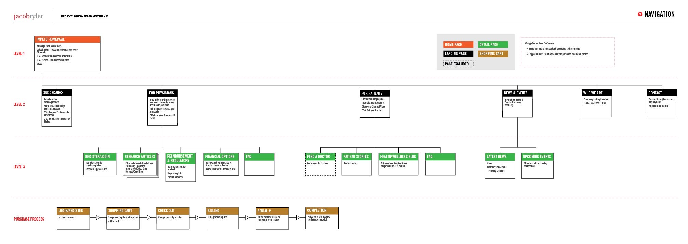
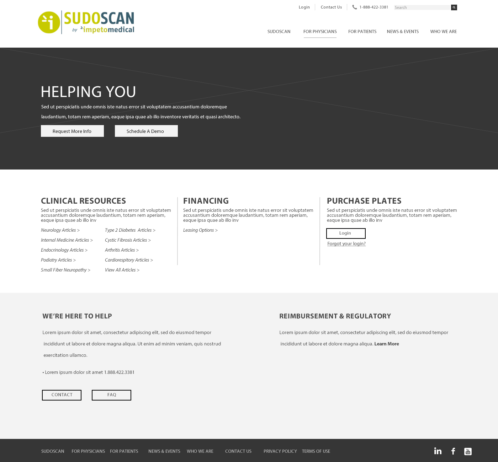

Impeto Medical is a privately owned medical device company which manufactures and markets devices for non-invasive assessment of sweat gland activity through Sudorimetry.
Impeto Medical has tasked Jacob Tyler Agency with enhancing its website by creating an impactful, relevant and attractive online presence so that they may continue their path for success, credibility and new opportunities for expansion and profit. Jacob Tyler Agency will create an online experience which will provide doctors and patients with the resources to learn more about the medical device: Sudoscan.
Made an Information Architecture to organize the navigation and content in a clear and concise manner.

Designed Interactive Wireframes to visually guide the developers on the skeletal front end of the website.

Created the UI to give more depth to the colors, fonts, and styles to be used in the developed site.
Website was launched on October 2016.